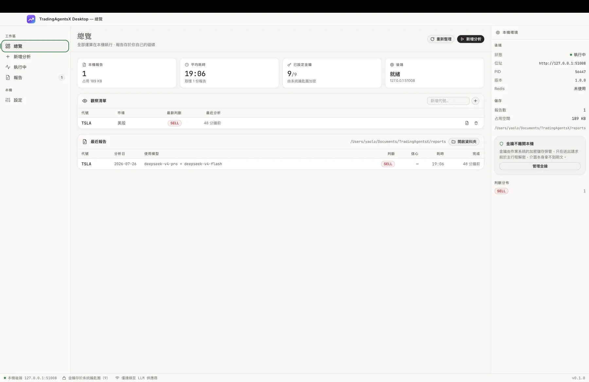
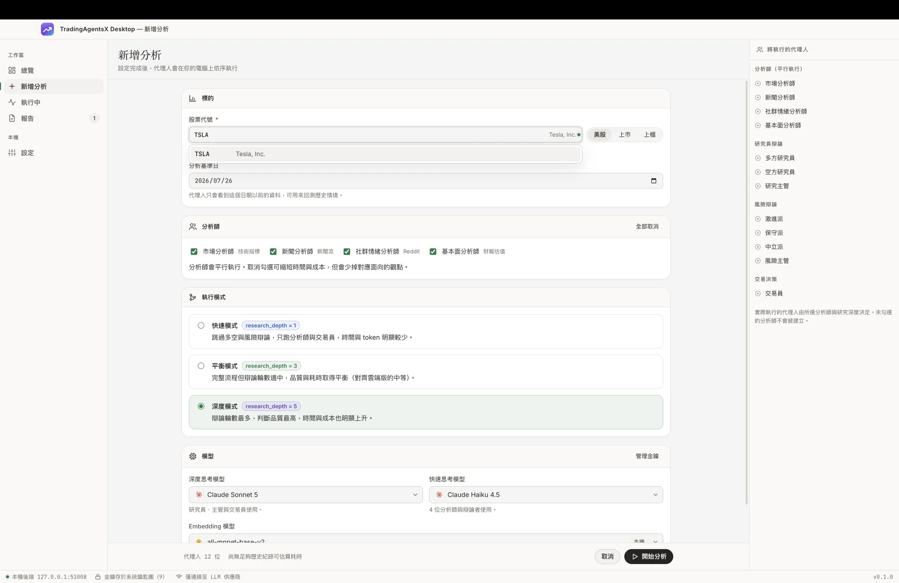
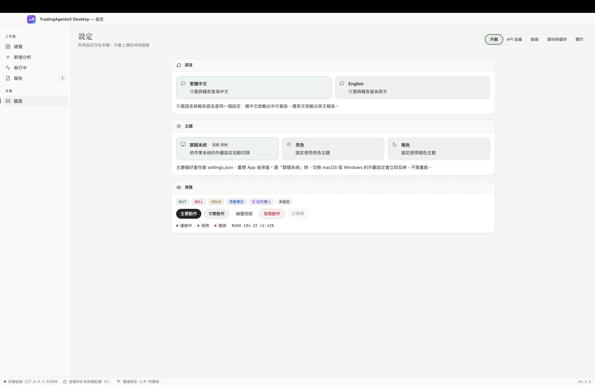

12 位 AI 代理人
在你自己的電腦上辯論
分析師平行蒐證、多空研究員正面交鋒、三派風險立場互相制衡，最後由交易員收斂成 BUY / SELL / HOLD。整段流程跑在你的 Mac 上，API 金鑰存進系統鑰匙圈，報告寫進你自己的磁碟。
你目前的系統看起來不是 macOS
這個版本只提供 macOS（Apple Silicon）安裝檔。Windows 與 Linux 版本尚未發佈， 但專案本身支援這些平台 —— 可以自行從原始碼建置。
僅限 Apple Silicon（M1 / M2 / M3 / M4）
這個安裝檔內含為 arm64 編譯的 Python 執行環境，在 Intel 處理器的 Mac 上無法運作。 目前沒有提供可用的 Intel 版本。
不確定自己的機器是哪一種：點左上角 Apple 選單 →「關於這台 Mac」， 看「晶片」欄位。顯示 Apple M… 就可以安裝； 顯示 Intel 則不行。
第一次開啟需要多按一步
這個 App 沒有經過 Apple 的開發者簽章與公證，所以 macOS 的 Gatekeeper 會先攔下來， 可能顯示「無法打開，因為無法驗證開發者」或「檔案已損毀」。App 本身沒有損毀 —— 這是未簽章的預期行為。
- 打開下載的 .dmg，把 TradingAgentsX Desktop 拖進「應用程式」。
- 在「應用程式」裡對它按住 Control 並點一下，選打開， 接著在跳出的對話框再按一次打開。（直接雙擊會被擋，這個路徑才會給你放行選項。）
- 若仍被擋，開啟「終端機」執行下面這行移除隔離標記，然後重新開啟 App：
xattr -dr com.apple.quarantine "/Applications/TradingAgentsX Desktop.app"下載後可以自行核對檔案
因為沒有簽章，你無法靠系統驗證來源。若要確認下載的檔案完整且未被替換， 在終端機執行 shasum -a 256 <檔案>，比對是否等於：
1c4c7e36fd28d6d272df787a8a37465835d6dbcb1b14295a3071cc6d54fdefd4從設定到報告，全部在本機
以下是 v0.1.0 的實際操作畫面，未經修飾。介面支援繁體中文與 English、亮色與暗色主題。






四個階段，12 位代理人
由 LangGraph 編排。實際建立的代理人數量取決於你勾選的分析師與研究深度 —— 沒勾的不會被建立，也不會花你的 token。
分析師 · 平行執行
四個面向同時蒐證，彼此不等待。
市場（MACD / RSI / 布林通道）· 新聞（Google News 與總體）· 社群情緒（Reddit）· 基本面（財報、估值與產業比較）
研究員辯論
多空各自建構論點並互相反駁，再由主管收斂成投資計畫。
多方研究員 · 空方研究員 · 研究主管
風險辯論
三種風險偏好對同一份計畫互相制衡，避免單一立場主導結論。
激進派 · 保守派 · 中立派 · 風險主管
交易決策
綜合以上全部產出，收斂成單一可執行判斷。
交易員 → BUY / SELL / HOLD
你的金鑰、你的資料、你的機器
金鑰不離開本機
以 macOS 鑰匙圈加密後寫入本機檔案，只在送出請求的那一刻於主行程解密。介面本身拿不到明文，也不經過任何中繼伺服器。
報告存在你的磁碟
每次分析輸出一份 JSON 到你自己的「文件」資料夾，可以直接開啟所在位置。沒有雲端同步，也沒有帳號。
不需要安裝 Python
安裝檔內含完整的 Python 執行環境與所有後端依賴。不用 clone repo、不用 conda、不用 pip install。
自己決定成本
三段研究深度直接對應時間與 token 花費。快速模式跳過辯論、深度模式跑滿五輪，你自己權衡。
換得動模型
深度思考與快速思考可分開指定，六家供應商任意搭配，也能填 OpenAI 相容端點接本機模型。
可回測歷史情境
指定分析基準日，代理人只會看到那天以前的資料 —— 可以拿過去的時點驗證流程會做出什麼判斷。
系統需求
| 項目 | 需求 |
|---|---|
| 處理器 | Apple Silicon（M 系列）。不支援 Intel Mac。 |
| 系統 | macOS 11 Big Sur 或更新版本 |
| 下載大小 | 369 MB |
| 安裝後占用 | 約 1 GB（含內建 Python 執行環境） |
| LLM 金鑰 | 需自備至少一家供應商的 API 金鑰，費用由你直接付給供應商 |
| 網路 | 需要 —— 用於呼叫 LLM 與抓取行情、新聞資料 |
| 簽章狀態 | 未簽章、未公證，首次開啟需手動放行（見上方說明） |